1215–1228
1215–1228

1228

1228–1230

1228

1228

1228–1235

c. 1260s

c. 1230–1253

1235–1240

c. 1240–1250

1253

c. 1253–1268

c. 1255

1268 onwards

1268

c. 1270

c. 1272

c. 1275

c. 1275

c. 1277

c. 1278

c. 1278

c. 1279

c. 1280

c. 1282

c. 1283

c. 1285

c. 1305

c. 1305

c. 1306–1307

c. 1308

c. 1310

c. 1335

c. 1338

c. 1339

1364–1369

1376

1376

1376–1380

1380–1387

c. 1388

1388

1389

1389–1397

c. 1390–1397

1396–1400

1397

1397

1397

1397

1397–1407

c. 1398

c. 1398–1400

c. 1400

c. 1401

c. 1401

1401

c. 1401–1407

c. 1403

c. 1405

1407–1422

1422–1439

1439–1488

c. 1460

c. 1461

c. 1462

c. 1470

1490

1491

1492

1493

1493

1493

c. 1494

c. 1495
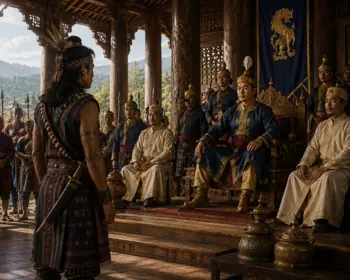
c. 1505
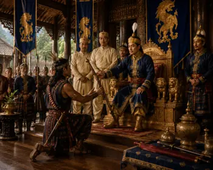
c. 1506
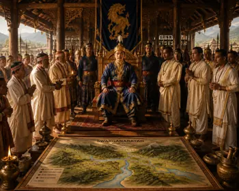
c. 1510
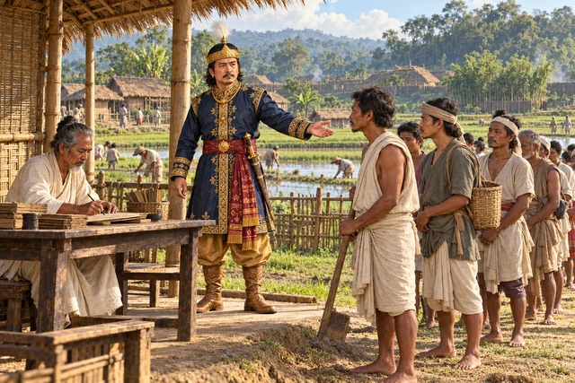
1510
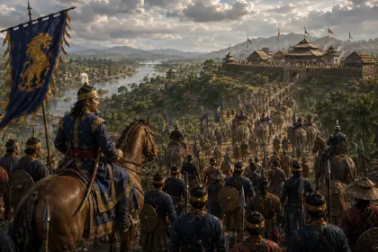
1520

1523
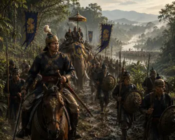
c. 1527
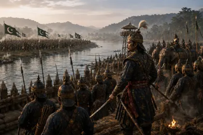
1527–1531
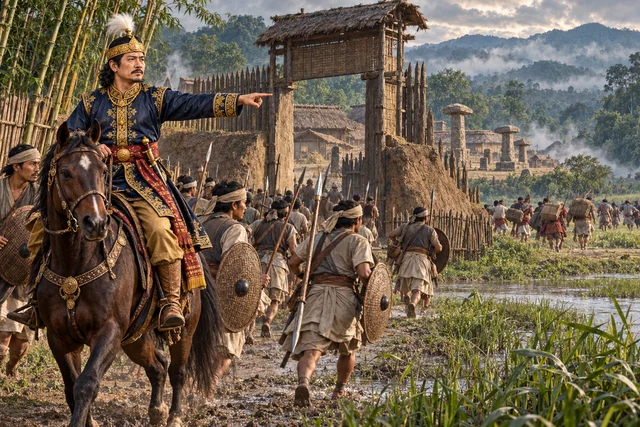
1526–1531
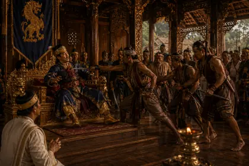
c. 1532
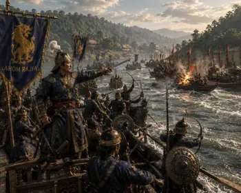
c. 1532
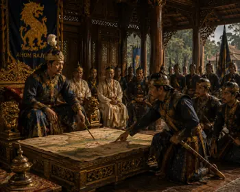
c. 1532

1532

1532–1533

1532–1533
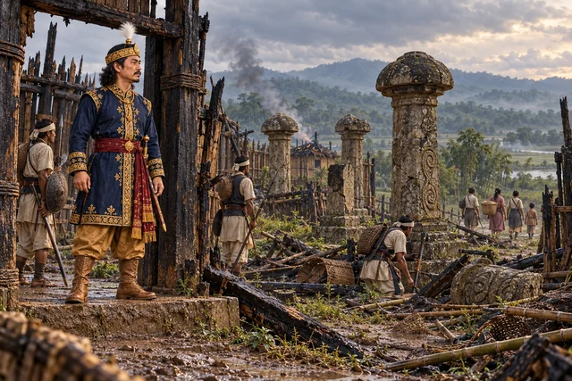
c. 1536
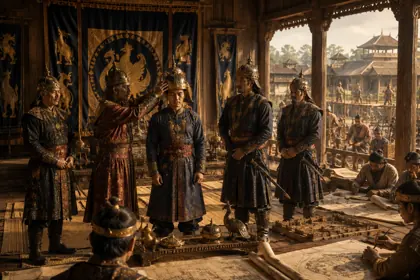
1539
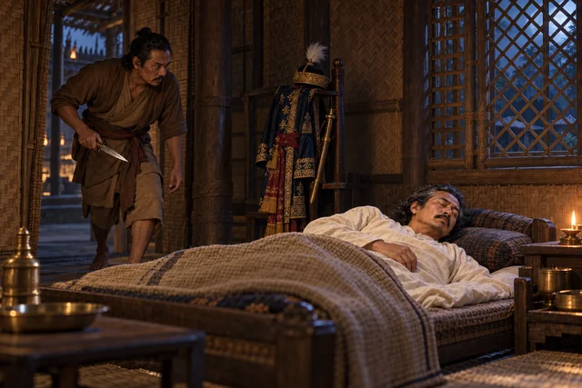
January 1539
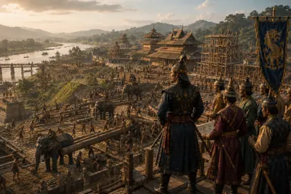
1540–1546
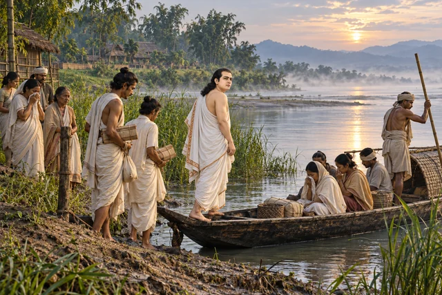
c. 1540s
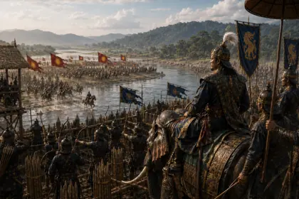
1546–1547
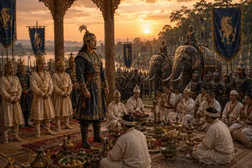
c. 1548
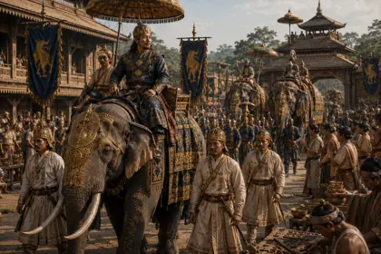
c. 1555
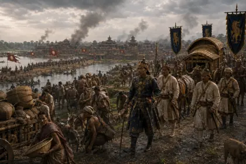
1562–1563
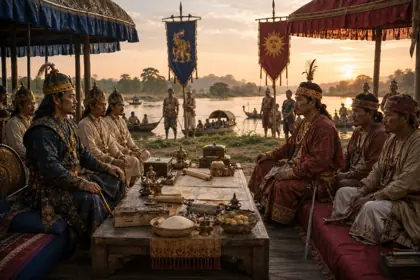
1563
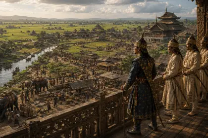
1565–1603
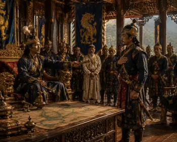
c. 1532
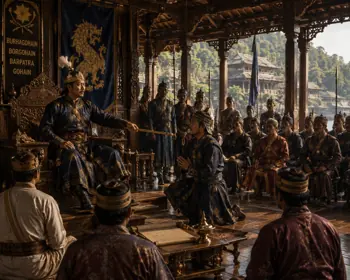
c. 1532

c. 16th–17th Century
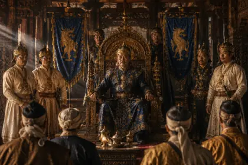
1603

c. 1608–1615
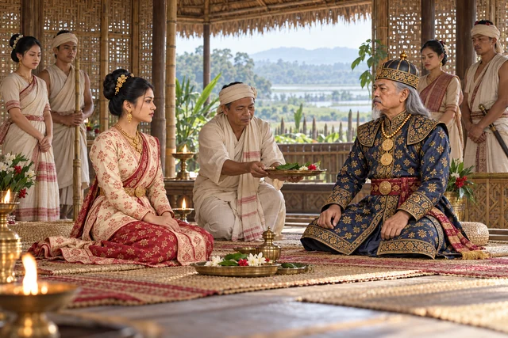
1608
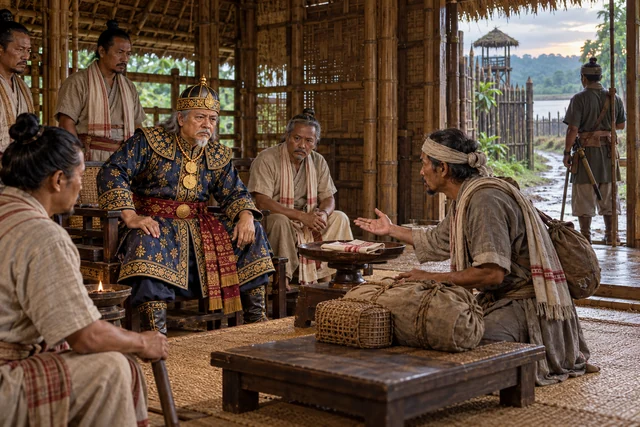
early 17th century
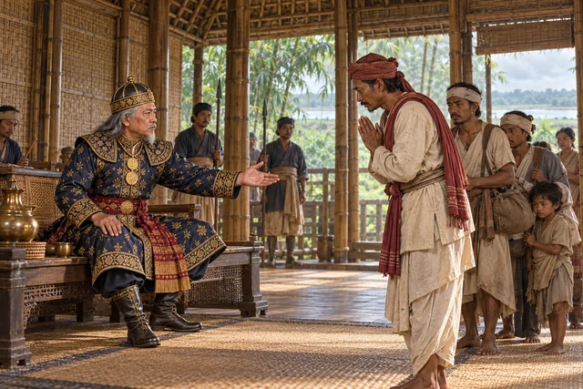
1613–1615

c. 1615
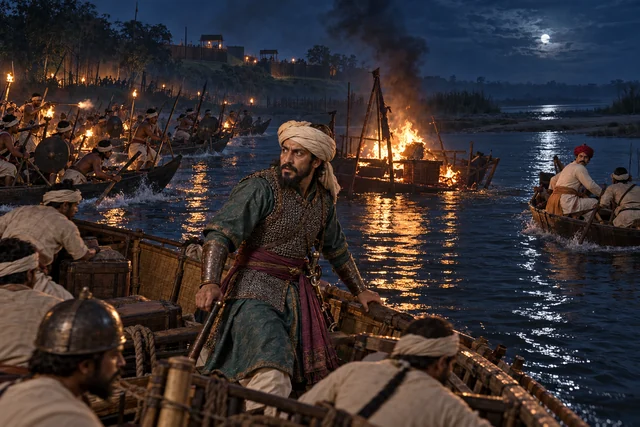
1615–1616

1636–1638

1639
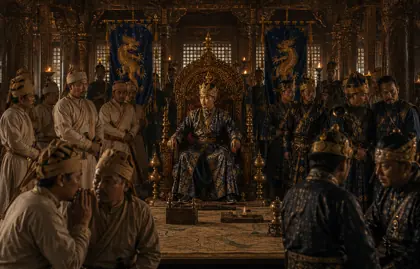
1641–1644
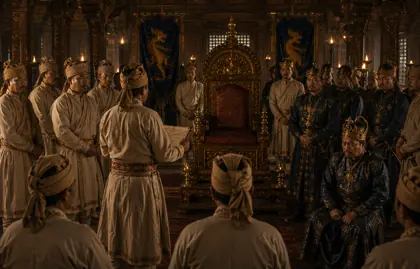
1644
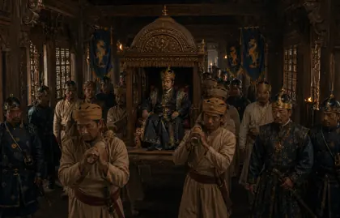
1644–1648

1648

1648

c. 1650

c. 1654–1663

1648–1663

1658–1659

c. 1660

1662

March 1662

June–October 1662

January 1663

1663

1663

November 1663
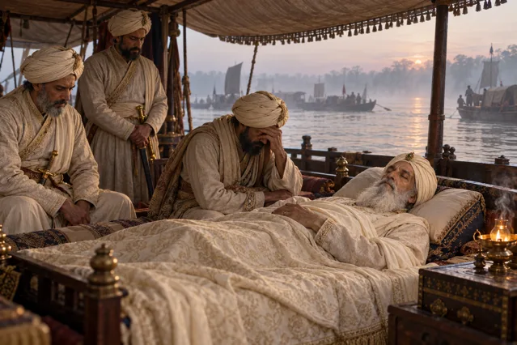
March 1663

1667

1667

November 1667

1667

August 1669

1669–1670
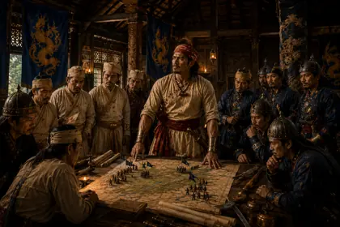
1670
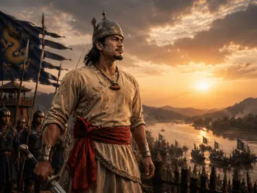
1671
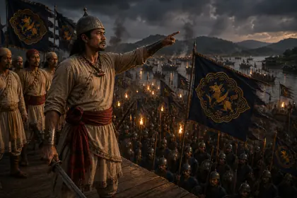
March 1671

March 1671
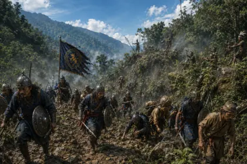
1671–1672
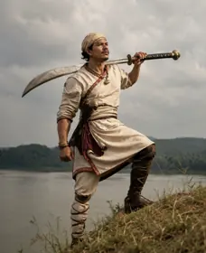
1671

April 1672

1672–1675

November 1672

1675

1675

1675
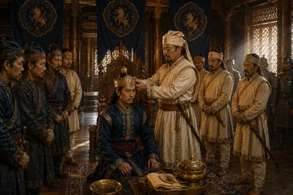
1675
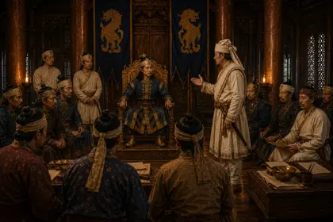
1676
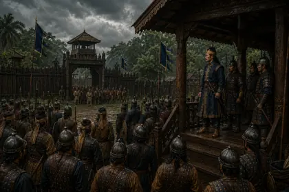
1677
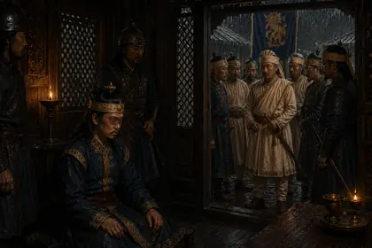
1677
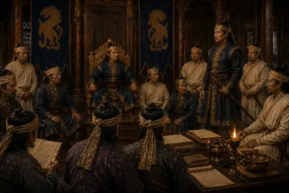
1677

February 1679

1679–1680

1679

1679–1680

1680

1680

1680
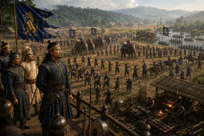
1681–1682
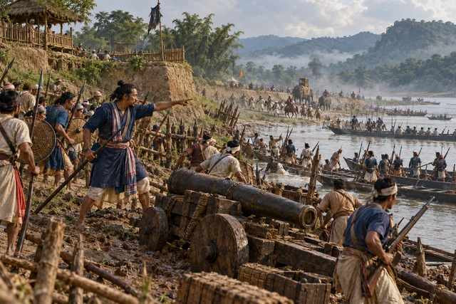
August 1682
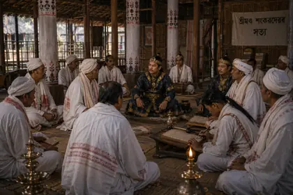
c. 1685
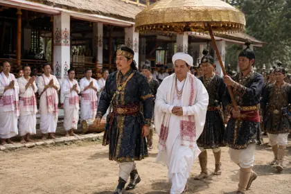
c. 1688
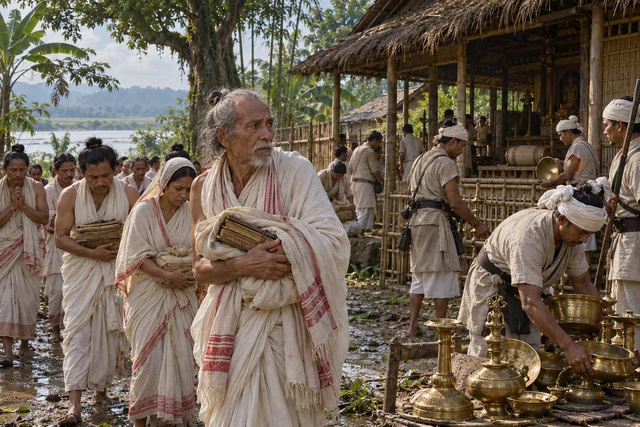
c. 1690s
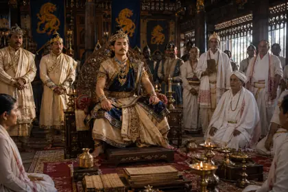
1696
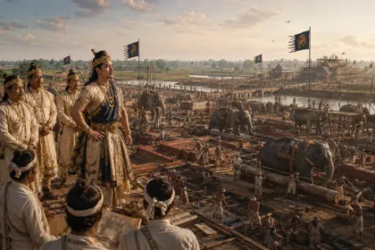
1698–1705
1703
c. 1705

1706–1707
c. 1710
1713
27 August 1714
c. 1714–1720s
1722
c. 1725
c. 1730
1734
1734
c. 1735–1740

1739

1744

c. 1746

c. 1748
1751–1765

1751
1752
c. 1750s–1760s
1765–1768
1768

1769

November 1769

April 1770 (Bihu Eve)

1770–1772
April 1782

1786–1788
1786
1788
c. 1791
1791
1792–1794
February 1793

1794

1795–1811

1805

1814–1816
1815–1816

March 1817
August 1817

February 1818

February 1819
1819
1821
1821–1824
October–December 1821
March–April 1822
June–July 1822

1824–1826
1824–1825
24 February 1826
1828
1830

April 1833

1834–1837

October 1838